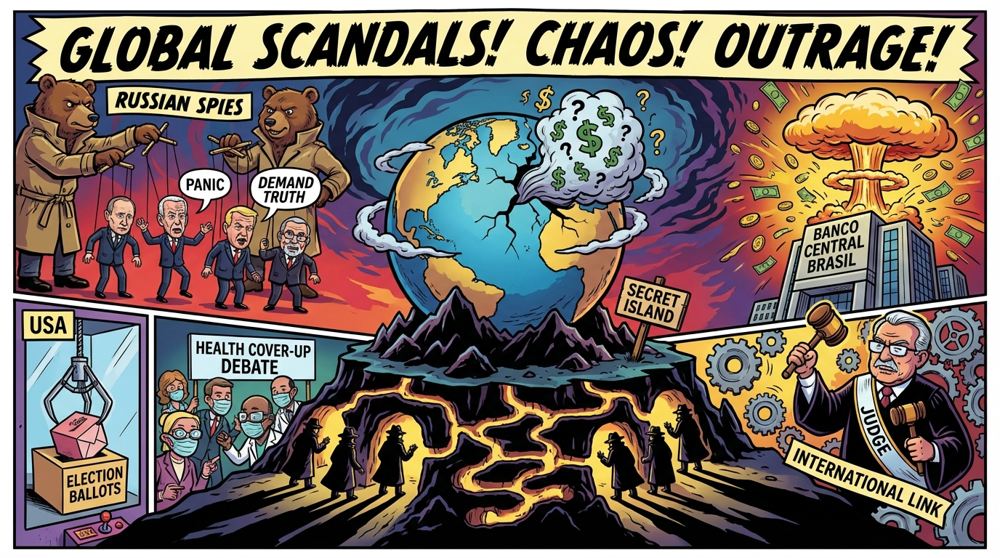

The Daily Globe: Poland PM Tusk accuses Russian secret services of co-organizing Epstein pedophilia scandal, Trump reportedly in panic over resurfaced Epstein scandal, and Banco Master: Worst corruption scandal in Brazilian history, says Deputado Jordy
Published on 2026-02-04

World
- Poland PM Tusk accuses Russian secret services of co-organizing Epstein pedophilia scandal
Allegations linking Epstein's network to Russian intelligence, with unclear money sources and growing suspicions.
- Calls for Trump to address Epstein as the greatest scandal in world history
Public outrage demands arrests and a national address on the Epstein case amid global political implications.
- UK demands inquiry into Epstein connections with Lord Mandelson
Calls for public inquiry and resignation over ties to Epstein scandal.
USA
- Trump reportedly in panic over resurfaced Epstein scandal
New allegations tying elites and cover-ups have the White House scrambling.
- Alleged Trump team-FBI coordination to seize Georgia ballots
Karoline Leavitt admits coordination in Fulton County ahead of voting nationalization push.
- Scott Bessent exposes Biden health cover-up double standard
Criticizes media for ignoring Biden's lack of cabinet meetings for months versus Trump's transparency.
Brazil
- Banco Master: Worst corruption scandal in Brazilian history, says Deputado Jordy
Surpasses Lava Jato with massive corruption, money laundering, and international links.
- US lawsuit links STF Minister Alexandre de Moraes to Banco Master scandal
Trump-associated company in US action associates Moraes with the corruption case.
- Lula negotiations to avoid prison amid ongoing scandals
Political discussions tie current government to corruption risks and potential arrests.
Topic Index
- epstein-resurgence
- russian-intelligence-links
- elite-pedophilia-scandal
- trump-epstein-panic
- georgia-ballot-seizure
- biden-health-coverup
- election-interference
- banco-master-corruption